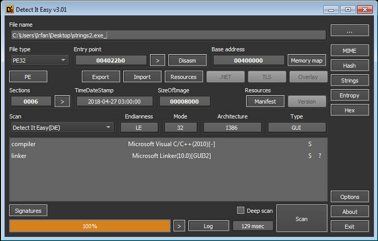
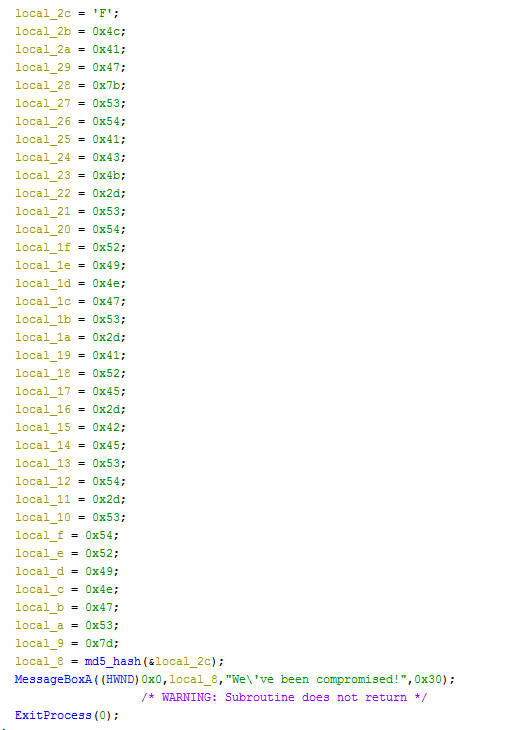
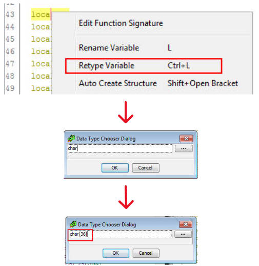
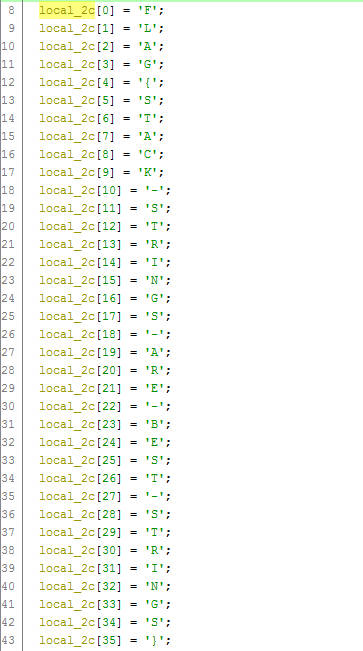
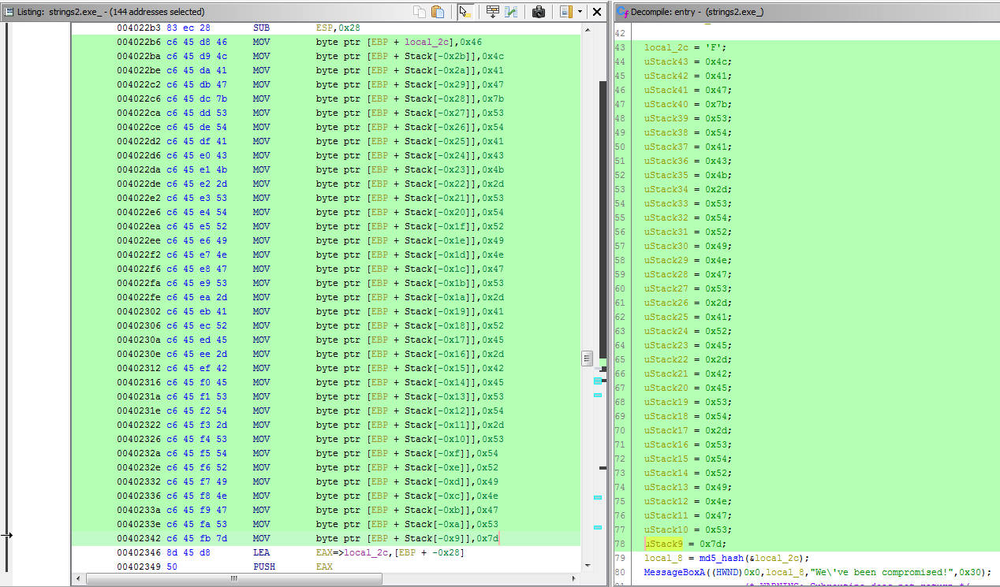
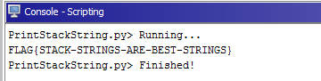
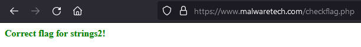

MalwareTech Windows Reversing Challenge #2 Write-Ups
[Hide and Seek]
Strings
Hello friend, back again with the MalwareTech Windows reversing challenge, now we are given a PE file named strings2.exe_.
Same as the previous challenge, we can only use static analysis to solve this challenge.
The description of this challenge:
strings2.exe contains an un-encrypted flag stored within the executable. When run, the program will output an MD5 hash of the flag but not the original. Can you extract the flag?
Let’s start it with detect it easy:

This PE uses C++, so i opened in Ghidra, go to the entry point function.

If we read the description, we can conclude that the parameter passed to the md5_hash function is the flag. But in this case, instead of storing the flag string in the data section which can be clearly identified by the ghidra decompiler, the program will initialize it in stack memory at runtime, so ghidra will identify it as undefined data instead of a string.
To read out stack string values clearly, we can simply update Ghidra’s stack frame description so that the individual opaque bytes are interpreted as elements in a character array. The easiest way to do this is to retype the earliest element from undefined to char[n] where n is the length of the reconstructed string.

Then we can see the string, but we have to read it vertically.

seems like the string is still not comfortable to read, huh?, especially if in the future we have to analyze 1 or 2 or more long stack strings, would definitely be very difficult and ineffective.
So here i’m going to write a Ghidra script to print the stack string that i want to analyze automatically.
from ghidra.program.model.address import AddressSet
max_addr = currentSelection.getMaxAddress()
stack_str = ""
inst = getInstructionAt(currentSelection.getMinAddress())
while inst.address < max_addr:
stack_str += chr(inst.getScalar(1).value & 0xff)
inst = inst.getNext()
print stack_str
With this script, i just need to do a selection from the first element to the last element of the stack string and run the script then we can see the result in Ghidra’s console.

Run the script and here is the result:

Let’s check this flag FLAG{STACK-STRINGS-ARE-BEST-STRINGS} :

Ok, we’ve got the flag.
Challenge source: https://www.malwaretech.com/challenges/windows-reversing/strings2